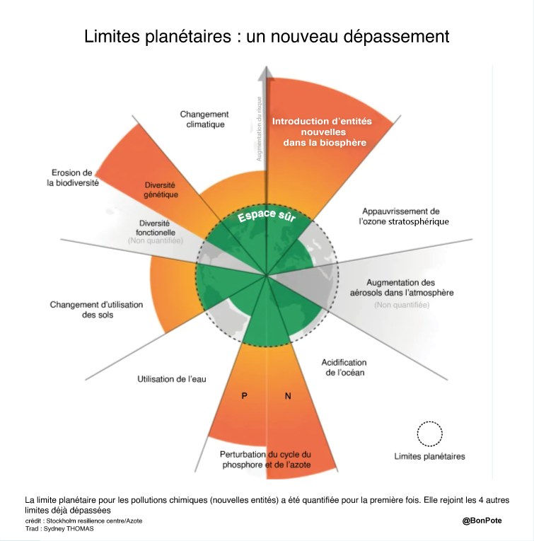
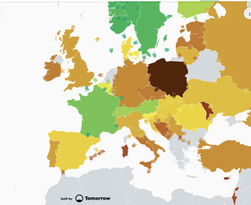

IT IS SUSTAINABLE
Nos choix (métiers/technos/statégiques) aideront la planète
Plan
- Context
- Architecture
- Ops
- Dev
- Action
But
Quels sont les choix technologiques et les choix métiers que nous
pouvons mettre en place pour rendre nos réalisations plus vertes :
- consommant moins d’énergie
- consommant moins de ressources
- avec un impact faible sur l’humain et le non humain
Les 3 piliers du Développement Durable
Réchauffement Global
Dérèglement climatique local
Les 9 limites de la planète

Impact du numérique
80 %
Fabrication
20 %
Utilisation
Chiffres 2019
- 3 x l'emprunte carbone de
la France ou de l'Angleterre : Eau, Matériaux, Energie
- 10 % de l'électricité produite dans le monde
- 4 % des emissions de GES
- 21 %du forfait GES annuel à cause du numérique
- 🚀 + 21 % des déchets numérique 2015-2020
Que faisons nous dans le numérique ?
des logiciels, sur des ordinateurs
Que faisons nous dans le numérique ?
des logiciels, avec des disques, de l'électricité, des processeurs,
de la mémoire, du réseau, des écrans, des capteurs, etc...
Recette
Boule de pain
Une bonne dose de farine
.
De l’eau
.
Un peu de levure
.
Un pincée de sel
Ressources qui s'épuisent
From Cradle to Grave
- Extraction des matières premières
- Transport
- Assemblage
- Intégration
- Fin de vie : déchets ou recyclage / réutilisation
Equipements connectés à Internet
30
milliards
Dont :
- 3.6 milliards de smartphone
- 2 milliards d'ordinateurs
Quel est l'impact d'un ordinateur portable ?
- 1 tonne de matières premières
- 200 kg GES
Effet Rebond
plus on améliore l'efficacité d'utiliser une ressource,
plus sa consommation peut augmenter.
Critères de sélections d'une architecture ?
- Couverture fonctionnel
- Exigence non fonctionnelle : interopérabilité, sécurité, disponibilité
- Faisabilité
- Coût / Budget
Localisation Géographique

Vraiment ?
A-t-on vraiment besoin de cette fonctionnalité ?
Mise à jours
- Souvent l'occasion d'ajouter des fonctionnalité non
nécessaire
- Système plus intelligent : exemple Eclipse Plateforme.
Synchro des photo de smartphone dans le Cloud
- 32 000 photos / secondes
- ➔ 100 000 disques dure / an
- ➔ 2,4 centrales nucléaires dédiés
MAtériel
- Occasions / Reconditionnés
- ➔ allongement de la durée de vie
- ⚠️ consommation d'énergie
Cloud
- Bonne gestion des serveurs
- Bien choisir son fournisseur
- American Cloud Act 👨👩👦👦